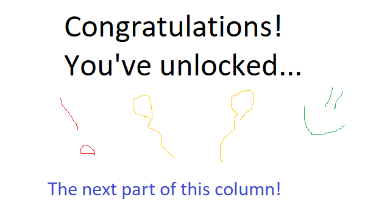

Why Unlocks Matter
Some of the most memorable moments in gaming come hand-in-hand with unlocking new content.
When I look back on the most exciting moments in my personal gaming history -- defeating a difficult boss after hours, or solving a challenging puzzle at the end of a level, or reaching a new area of a map to explore -- all of these moments were associated, in one way or another, with an unlock.
Unlocks can come in many forms, from explicitly rewarding the player with achievements to opening new areas of the map or introducing new gameplay elements. They can give the player new abilities, cosmetics, or just a small self-esteem boost. But unlocks almost universally share their ability to motivate the player, either to continue playing until achieving an unlock or to play after achieving an unlock in order to explore new content.
I’m using the word “unlock” liberally here to refer to any sort of new content provided during the game. A player could unlock new in-game items, as in The Binding of Isaac or Spelunky; or a new set of levels, as in Angry Birds or Super Mario Bros.; or a new outfit for a character, as in online multiplayer games such as League of Legends or Fortnite.
_________________________
The Elements of an Unlock
In Herman Electro, there are a variety of content types gated behind unlocks. New characters, items, puzzle elements, and other miscellaneous content are all tied to unlocks. In order to figure out how to organize an unlock system to slowly roll out all of this content, I had to take a closer look at the underlying attributes that define an unlock system.
We can define unlock systems by a few attributes, listed below.
Required effort: Some unlocks come naturally, without requiring the player to go out of his or her way to perform a specific action. Other unlocks can only be achieved by performing specific actions outside the normal range of the player’s behavior. While natural unlocks guarantee a constant sense of progression, unlocks that require specific actions can encourage the player to explore new elements of the game.
Resources invested: Unlocks may require varying amounts of resources, such as in-game currency. By requiring that players spend resources, unlocks can appear more valuable and reflect the work that the player put into earning those resources. However, the tradeoff of spending resources to gain something new can frustrate players or make them save their resources instead of spending them, since they had to put time and effort into earning in-game currency and are reluctant to spend it.
Progress clarity: An unlock system can clearly show the player how close he or she is to achieving an unlock, or it can hide this information from the player. The first system motivates the player to keep playing until the next unlock, especially if the soon-to-be-unlocked content looks exciting. The second system gives the player a fun surprise every once in a while, and the random nature of the unlocks can motivate the player, since a new unlock could be earned at any time. (In the first system, a player might be reluctant to play immediately after achieving an unlock, if it is clear the next unlock requires a large time investment.)
Gameplay impact: Unlocks like character skins or items that spawn infrequently will not have much impact on the game. However, more frequently-appearing content, such as a new enemy type, can change the gameplay enormously.
_________________________
What is the Best System?
When designing the unlock systems of Herman Electro, we initially hoped to figure out the optimal settings for each of the attributes above. Is a series of naturally-occuring, progress-denoting unlocks ideal? Or maybe unlocks that require specific, difficult-to-achieve actions that are not explained to the player beyond a vague description?
One thing was clear: the days of our XP bar were numbered.
After testing out a variety of unlock systems, we realized something important: there is no single ideal unlock system, because the attributes above aren’t clearly good or bad, but rather give different benefits depending on how they are used. For example, an unlock system that clearly shows progress toward the next unlock motivates players who are close to a new unlock, but an unlock system that does not show progress can also motivate players since they know that a new unlock could occur at any time.
To reap the benefits of the above attributes as much as possible, we decided to build the unlock progression of Herman Electro around multiple unlock systems that behave in different ways, each of which serves to uniquely motivate the player.
_________________________
The Multiple-Solution Solution
The unlock systems of Herman Electro work together to motivate the player from multiple angles at once.
New tools, our version of in-game items, are unlocked through the “meta-shop.” The player finds pieces of scrap metal throughout the game that can be spent in the meta-shop to unlock new tools. The meta-shop displays how many pieces of scrap metal are required for the next tool unlock, as well as what that unlock will be, which motivates the player to find more scrap metal and also emphasizes the importance of the unlock by costing an in-game resource.
In addition, the player can actually use their newly unlocked tool as soon as they unlock it, since it is added to their inventory. By allowing the player to test out the new tool, he or she has an added incentive to keep playing after the unlock.
Many of the core tiles used in puzzles throughout the game unlock gradually over time without requiring much effort from the player. These tile unlocks feel as if they occur randomly after the player beats a room, although under the hood, they are actually tied to special rooms that teach important concepts in the game and reinforce the player’s learning. These tutorial rooms are not marked as being tied to unlocks, or as having any special status to separate them from any other rooms, so the player is usually surprised and excited to get a tile unlock.
Some unlocks are task-based, requiring the player to perform specific actions to achieve them. For example, winning as each character unlocks a new tile or other content element. Other task-based unlocks are tied to secrets that only the most dedicated players would uncover, and they reward the player with secret content that I won’t spoil here.
All of these unlock systems work in tandem to keep the player invested and aiming to unlock new content.
_________________________
In Conclusion
The hybrid unlock system model has worked well in Herman Electro. In general, it is always a good idea to consider how a given unlock system might motivate the player. The psychology behind unlocks -- giving players a reward for good play, then promising another reward if they continue to play more -- isn’t terribly complicated, but it is immensely powerful as a motivational tool and as a way to make the gameplay experience more exciting by frequently introducing new content.
Thanks for reading the column! If you have any questions or comments, feel free to email us at hermanelectrogame@gmail.com. You can follow our progress and see more posts and gifs on our Twitter account, @HermanElectro.